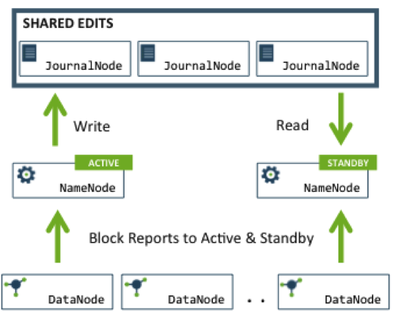

High Available(HA) Feature of HDFS cluster
Posted on 03/14/2015 to Blog | Tags: hadoop , HDFS
What is HA?
In short, HA feature results from two NameNodes sharing data.
How to achieve HA?
- Network File System
- Quorum Journal Manager
- Infrastructure
- Information needed for Failover
- Once failover happens
For details about NFS, please refer to hadoop documentation.
Use Quorum Journal Manager (QJM) feature and Zookeeper Failover Controller
Maintains two NameNodes on separate machines in a cluster
Active NameNode is responsible for all client operations in the cluster.
Standby NameNode :
1. maintains enough state to provide a fast failover
2. performs checkpoints of the namespace state.
Two namenodes share the same namespace so users don’t need to bother tuning variables.
Only one NameNode can be a writer at a time to prevent the split-brain scenario.

For failover, standby NameNode needs namespace modification and block location information.
To offer standby NameNode namespace modification, there are a group of separate daemons called JournalNodes (JNs) in cluster. Active NameNode writes modification to JNs and Standby NameNode reads from JNs. JN daemons may reasonably be co-located on machines with other Hadoop daemons like NameNodes, JobTracker, or the YARN ResourceManager. At least three JournalNode daemons are needed in a cluster.
To offer standby NameNode block location information, DataNodes are configured with the location of both the NameNodes and send block location information and heartbeats to both NameNode machines.
Standby NameNode ensures that it has read all of the edits from the JounalNodes and then promotes itself to the Active state.